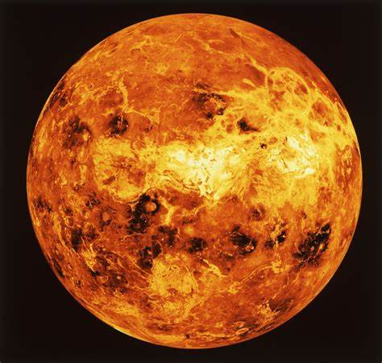

Venus
Venus is the second planet from the Sun. It is sometimes called Earth's "sister" or "twin" planet as it is almost as large and has a similar composition. As an interior planet to Earth, Venus appears in Earth's sky never far from the Sun either as morning star or evening star.
